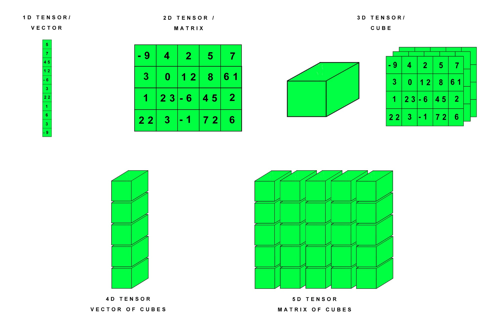

파이토치에서의 경사하강법
선형회귀 linear regression를 간단히 알아봤다. Pytorch를 이용하여 앞에서 설명한 선형회귀분석을 하기 위해서는 Pytorch에서 연산 그래프를 만들고 경사를 계산하는 방식을 이해할 필요가 있다.
Pytorch에서 데이터의 기본 단위로 텐서tensor라는 것을 사용한다. tensor는 다차원배열(array)라고 정의할 수 있다. tensor는 n차원의 배열을 전부 포함하는 넓은 개념이고 파이토치는 이러한 텐서를 기본 연산의 단위로 사용한다.
